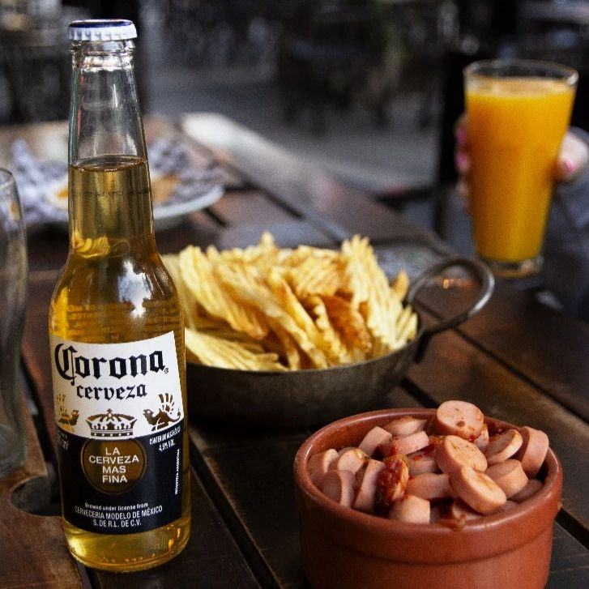
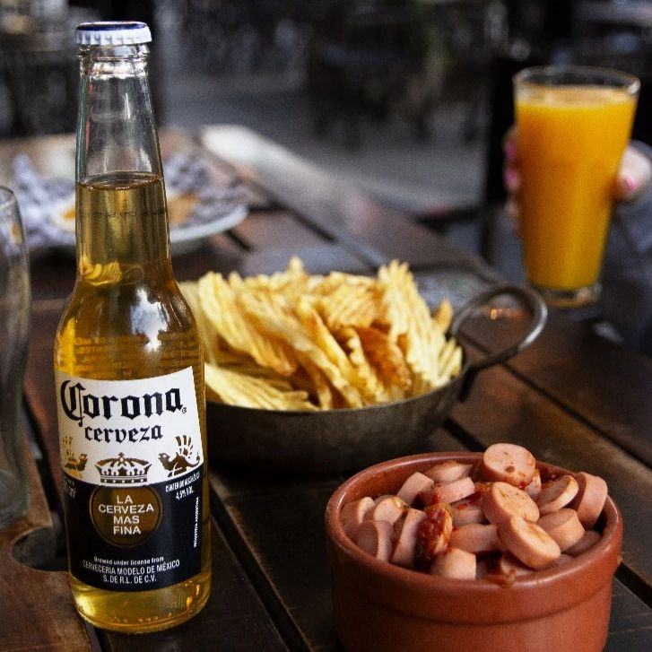

Lo mejor de lo mejor lo encontras acá
The Clover Bar Arroyo Seco es el lugar perfecto para quienes buscan una experiencia única en un ambiente acogedor. Nos enorgullece ofrecer una amplia selección de bebidas que incluye cervezas artesanales, cócteles clásicos y una variedad de vinos seleccionados. Nuestra carta destaca por las deliciosas picadas y pizzas artesanales, ideales para compartir con amigos o familiares. Cada visita a The Clover Bar se convierte en una ocasión especial, gracias a nuestro servicio atento y personalizado.
Además de nuestras exquisitas bebidas y comidas, The Clover Bar se caracteriza por su decoración rústica y elegante, que crea un ambiente cálido y relajado. Organizamos eventos temáticos y noches especiales con música en vivo, brindando a nuestros clientes una experiencia memorable en cada visita. Ya sea para una noche tranquila o una celebración, The Clover Bar es el destino preferido en Arroyo Seco.
 
